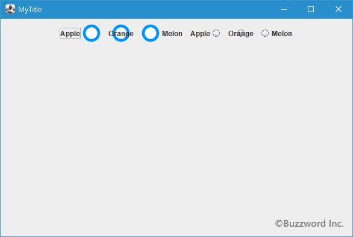
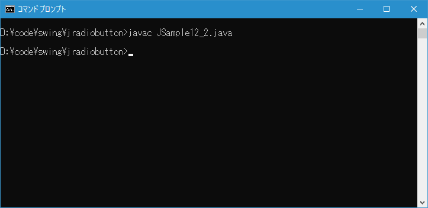
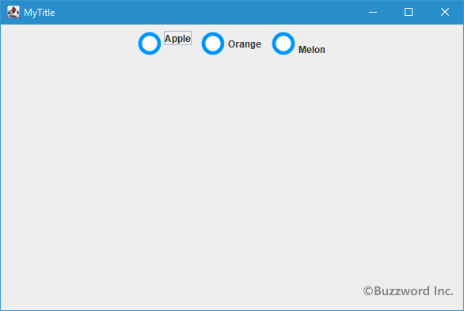
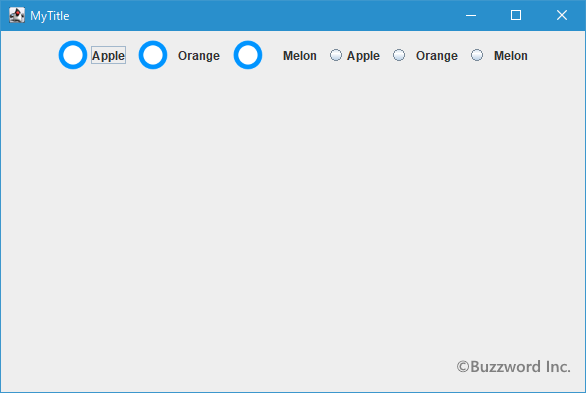

ラジオボタンã�«æ–‡å—列ã�¨ç”»åƒ�ã�®ä¸¡æ–¹ã‚’表示ã�—ã�Ÿå ´å�ˆã�®ä½�置関係をè¨å®šã�™ã‚‹
ラジオボタンã�«æ–‡å—列ã�¨ç”»åƒ�ã�®ä¸¡æ–¹ã‚’表示ã�—ã�Ÿå ´å�ˆã€�デフォルトã�§ã�¯ç”»åƒ�ã�Œå·¦å�´ã€�æ–‡å—列ã�Œå�³å�´ã�«è¡¨ç¤ºã�•ã‚Œã�¾ã�™ã€‚ã�¾ã�Ÿå�‚ç›´æ–¹å�‘ã�¯ã��ã‚Œã��ã‚Œã�®ä¸å¤®ã�Œå�Œã�˜ä½�ç½®ã�«ã�ªã‚‹ã‚ˆã�†ã�«è¡¨ç¤ºã�•ã‚Œã�¾ã�™ã€‚ã�“ã�“ã�§ã�¯ãƒ©ã‚¸ã‚ªãƒœã‚¿ãƒ³ã�«æ–‡å—列ã�¨ç”»åƒ�ã�®ä¸¡æ–¹ã‚’表示ã�—ã�Ÿå ´å�ˆã�®æ°´å¹³æ–¹å�‘å�Šã�³å�‚ç›´æ–¹å�‘ã�«ä½�置関係をè¨å®šã�™ã‚‹æ–¹æ³•ã�«ã�¤ã�„ã�¦è§£èª¬ã�—ã�¾ã�™ã€‚
ã�ªã�Šãƒ©ã‚¸ã‚ªãƒœã‚¿ãƒ³ã�§ã�¯ç”»åƒ�ã‚’è¨å®šã�—ã�¦ã�„ã�ªã�„å ´å�ˆã�¯æ–‡å—列ã�®å·¦å�´ã�«å°�ã�•ã�ªã‚µãƒ¼ã‚¯ãƒ«ã�Œè¡¨ç¤ºã�•ã‚Œã�¾ã�™ã€‚ã�“ã�®ã‚µãƒ¼ã‚¯ãƒ«ã�¯ç”»åƒ�ã�¨å�Œã�˜æ‰±ã�„ã�«ã�ªã�£ã�¦ã�„ã‚‹ã�®ã�§æ–‡å—列ã� ã�‘をラジオボタンã�«è¡¨ç¤ºã�—ã�¦ã�„ã‚‹å ´å�ˆã�¯æ–‡å—列ã�¨ã�“ã�®ã‚µãƒ¼ã‚¯ãƒ«ã�®ä½�置関係ã�¨ã�ªã‚Šã�¾ã�™ã€‚
目次
ç”»åƒ�ã�«å¯¾ã�™ã‚‹æ–‡å—列ã�®æ°´å¹³ä½�置をè¨å®šã�™ã‚‹
ç”»åƒ�ã�«å¯¾ã�™ã‚‹æ–‡å—列ã�®æ°´å¹³ä½�置をè¨å®šã�™ã‚‹ã�«ã�¯ JRadioButton クラスã�®è¦ªã‚¯ãƒ©ã‚¹ã�§ã�‚ã‚‹ AbstractButton クラスã�§å®šç¾©ã�•ã‚Œã�¦ã�„ã‚‹ setHorizontalTextPosition メソッドを使ã�„ã�¾ã�™ã€‚
public void setHorizontalTextPosition?(int textPosition)
アイコンã�«å¯¾ã�™ã‚‹ãƒ†ã‚ストã�®ä½�ç½®(水平方å�‘)ã‚’è¨å®šã�—ã�¾ã�™ã€‚
パラメータ:
textPosition - 次�値���れ�。
SwingConstants.RIGHT
SwingConstants.LEFT
SwingConstants.CENTER
SwingConstants.LEADING
SwingConstants.TRAILING (デフォルト)
例外:
IllegalArgumentException - textPositionã�Œä¸Šè¨˜ã�®æ£å½“ã�ªå€¤ã�®ã�©ã‚Œã�§ã‚‚ã�ªã�„å ´å�ˆ
引数ã�«ã�¯ç”»åƒ�ã�«å¯¾ã�™ã‚‹æ–‡å—列ã�®æ°´å¹³ä½�置を指定ã�—ã�¾ã�™ã€‚指定ã�§ã��る値ã�¯æ¬¡ã�®é€šã‚Šã�§ã�™ã€‚
JRadioButton.LEFT 左詰 JRadioButton.CENTER ä¸å¤® JRadioButton.RIGHT å�³è©° JRadioButton.LEADING 左詰 JRadioButton.TRAILING å�³è©° (デフォルト)
※�値� javax.swing.SwingConstants インターフェース�定義�れ��り� JRadioButton クラス� SwingConstants インターフェースを実装��クラス��。
※ LEADING (å…ˆé )ã�¨ TRAILING (末)ã�¯åˆ©ç”¨ã�—ã�¦ã�„る言èª�ã�«ã‚ˆã�£ã�¦ä½�ç½®ã�Œå¤‰ã‚�ã‚Šã�¾ã�™ã€‚日本èª�や英èª�ã�®ã‚ˆã�†ã�«å·¦ã�‹ã‚‰å�³ã�¸æ–‡å—を表示ã�™ã‚‹å ´å�ˆã�¯ LEADING ã�Œå·¦è©°ã�§ TRAILING ã�Œå�³è©°ã�§ã�™ã�Œã€�å�³ã�‹ã‚‰å·¦ã�¸æ–‡å—を表示ã�™ã‚‹ã�®ã�Œæ™®é€šã�®è¨€èª�ã�®å ´å�ˆã�«ã�¯ LEADING ã�Œå�³è©°ã�§ TRAILING ã�Œå·¦è©°ã�¨ã�ªã‚Šã�¾ã�™ã€‚
実際�使�方�次�よ���り��。
JRadioButton radio = new JRadioButton("Apple");
ImageIcon icon = new ImageIcon("./img/sample.png");
radio.setIcon(icon);
radio.setHorizontalTextPosition(JRadioButton.CENTER);
水平方å�‘ã�®ä½�ç½®ã�¨ã�—ã�¦ JRadioButton.CENTER ã‚’è¨å®šã�—ã�Ÿå ´å�ˆã€�ç”»åƒ�ã�®ä¸Šã�«é‡�ã�ªã‚‹ã‚ˆã�†ã�«æ–‡å—列ã�Œè¡¨ç¤ºã�•ã‚Œã‚‹ã�“ã�¨ã�«ã�ªã‚Šã�¾ã�™ã€‚
サンプルプãƒã‚°ãƒ©ãƒ
ã��ã‚Œã�§ã�¯ç°¡å�˜ã�ªã‚µãƒ³ãƒ—ルプãƒã‚°ãƒ©ãƒ を作ã�£ã�¦è©¦ã�—ã�¦ã�¿ã�¾ã�™ã€‚テã‚ストエディタã�§æ¬¡ã�®ã‚ˆã�†ã�«è¨˜è¿°ã�—ã�Ÿã�‚ã�¨ã€� JSample12_1.java ã�¨ã�„ã�†å��å‰�ã�§ä¿�å˜ã�—ã�¾ã�™ã€‚
import javax.swing.JFrame;
import javax.swing.JRadioButton;
import javax.swing.JPanel;
import javax.swing.ButtonGroup;
import javax.swing.ImageIcon;
import java.awt.Container;
import java.awt.BorderLayout;
import java.awt.Dimension;
class JSample12_1 extends JFrame{
public static void main(String args[]){
JSample12_1 frame = new JSample12_1("MyTitle");
frame.setVisible(true);
}
JSample12_1(String title){
setTitle(title);
setBounds(100, 100, 600, 400);
setDefaultCloseOperation(JFrame.EXIT_ON_CLOSE);
ImageIcon icon = new ImageIcon("./not_select.png");
ImageIcon icon_select = new ImageIcon("./select.png");
JRadioButton radio1 = new JRadioButton("Apple", icon);
radio1.setHorizontalTextPosition(JRadioButton.LEFT);
JRadioButton radio2 = new JRadioButton("Orange", icon);
radio2.setHorizontalTextPosition(JRadioButton.CENTER);
JRadioButton radio3 = new JRadioButton("Melon", icon);
radio3.setHorizontalTextPosition(JRadioButton.RIGHT);
ButtonGroup bgroup1 = new ButtonGroup();
bgroup1.add(radio1);
bgroup1.add(radio2);
bgroup1.add(radio3);
JRadioButton radio4 = new JRadioButton("Apple");
radio4.setHorizontalTextPosition(JRadioButton.LEFT);
JRadioButton radio5 = new JRadioButton("Orange");
radio5.setHorizontalTextPosition(JRadioButton.CENTER);
JRadioButton radio6 = new JRadioButton("Melon");
radio6.setHorizontalTextPosition(JRadioButton.RIGHT);
ButtonGroup bgroup2 = new ButtonGroup();
bgroup2.add(radio4);
bgroup2.add(radio5);
bgroup2.add(radio6);
JPanel p = new JPanel();
p.add(radio1);
p.add(radio2);
p.add(radio3);
p.add(radio4);
p.add(radio5);
p.add(radio6);
Container contentPane = getContentPane();
contentPane.add(p, BorderLayout.CENTER);
}
}
次�よ��コンパイルを行���。
javac JSample12_1.java
コンパイル�終�り���ら実行���。
java JSample12_1
ラジオボタンを 6 ã�¤è¿½åŠ ã�—ã�¾ã�—ã�Ÿã€‚最åˆ�ã�® 3 ã�¤ãƒ©ã‚¸ã‚ªãƒœã‚¿ãƒ³ã�«ã�¯ç”»åƒ�ã‚’è¨å®šã�—ã�¦ã�‚ã‚Šã�¾ã�™ã€‚ 1 ã�¤ç›®ã�®ãƒ©ã‚¸ã‚ªãƒœã‚¿ãƒ³ã�¯æ–‡å—列ã�Œå·¦ã�§ç”»åƒ�ã�Œå�³ã�«è¡¨ç¤ºã€� 2 ã�¤ç›®ã�®ãƒ©ã‚¸ã‚ªãƒœã‚¿ãƒ³ã�¯æ–‡å—列ã�¨ç”»åƒ�ã�Œé‡�ã�ªã�£ã�¦è¡¨ç¤ºã€� 3 ã�¤ç›®ã�®ãƒ©ã‚¸ã‚ªãƒœã‚¿ãƒ³ã�¯æ–‡å—列ã�Œå�³ã�§ç”»åƒ�ã�Œå·¦ã�«è¡¨ç¤ºã�•ã‚Œã�¦ã�„ã�¾ã�™ã€‚

4 ã�¤ç›®ã�‹ã‚‰ 6 ã�¤ç›®ã�¾ã�§ã�®ãƒ©ã‚¸ã‚ªãƒœã‚¿ãƒ³ã�«ã�¯ç”»åƒ�ã‚’è¨å®šã�—ã�¦ã�„ã�¾ã�›ã‚“ã�Œã€�ã‚‚ã�¨ã‚‚ã�¨è¡¨ç¤ºã�•ã‚Œã�¦ã�„ã‚‹å°�ã�•ã�ªã‚µãƒ¼ã‚¯ãƒ«ã�Œç”»åƒ�ã�¨å�Œã�˜ã‚ˆã�†ã�«æ–‡å—列ã�¨ã�®ä½�置関係ã�Œå¤‰æ›´ã�•ã‚Œã�¾ã�™ã€‚
ç”»åƒ�ã�«å¯¾ã�™ã‚‹æ–‡å—列ã�®å�‚ç›´ä½�置をè¨å®šã�™ã‚‹
ç”»åƒ�ã�«å¯¾ã�™ã‚‹æ–‡å—列ã�®å�‚ç›´ä½�置をè¨å®šã�™ã‚‹ã�«ã�¯ JRadioButton クラスã�®è¦ªã‚¯ãƒ©ã‚¹ã�§ã�‚ã‚‹ AbstractButton クラスã�§å®šç¾©ã�•ã‚Œã�¦ã�„ã‚‹ setVerticalTextPosition メソッドを使ã�„ã�¾ã�™ã€‚
public void setVerticalTextPosition?(int textPosition)
アイコンã�«å¯¾ã�™ã‚‹ãƒ†ã‚ストã�®ä½�ç½®(å�‚ç›´æ–¹å�‘)ã‚’è¨å®šã�—ã�¾ã�™ã€‚
パラメータ:
textPosition - 次�値���れ�。
SwingConstants.CENTER (デフォルト)
SwingConstants.TOP
SwingConstants.BOTTOM
引数ã�«ã�¯ç”»åƒ�ã�«å¯¾ã�™ã‚‹æ–‡å—列ã�®å�‚ç›´ä½�置を指定ã�—ã�¾ã�™ã€‚指定ã�§ã��る値ã�¯æ¬¡ã�®é€šã‚Šã�§ã�™ã€‚
JRadioButton.TOP 上端ã�«å�ˆã‚�ã�›ã‚‹ JRadioButton.CENTER ä¸å¤®(デフォルト) JRadioButton.BOTTOM 下端ã�«å�ˆã‚�ã�›ã‚‹
※�値� javax.swing.SwingConstants インターフェース�定義�れ��り� JRadioButton クラス� SwingConstants インターフェースを実装��クラス��。
実際�使�方�次�よ���り��。
JRadioButton radio = new JRadioButton("Apple");
ImageIcon icon = new ImageIcon("./img/sample.png");
radio.setIcon(icon);
radio.setVerticalTextPosition(JRadioButton.TOP);
JRadioButton.TOP ã‚’è¨å®šã�—ã�Ÿå ´å�ˆã�¯ã€�æ–‡å—列ã�¨ç”»åƒ�ã�®ä¸Šç«¯ã‚’å�ˆã‚�ã�›ã‚‹ã‚ˆã�†ã�«è¡¨ç¤ºã�—ã�¾ã�™ã€‚ç”»åƒ�ã�®ä¸Šéƒ¨ã�«æ–‡å—列ã�Œè¡¨ç¤ºã�•ã‚Œã‚‹ã‚�ã�‘ã�§ã�¯ã�‚ã‚Šã�¾ã�›ã‚“。å�Œã�˜ã‚ˆã�†ã‚ˆã�†ã�« JRadioButton.BOTTOM ã‚’è¨å®šã�—ã�Ÿå ´å�ˆã�¯ã€�æ–‡å—列ã�¨ç”»åƒ�ã�®ä¸‹ç«¯ã‚’å�ˆã‚�ã�›ã‚‹ã‚ˆã�†ã�«è¡¨ç¤ºã�—ã�¾ã�™ã€‚
サンプルプãƒã‚°ãƒ©ãƒ
ã��ã‚Œã�§ã�¯ç°¡å�˜ã�ªã‚µãƒ³ãƒ—ルプãƒã‚°ãƒ©ãƒ を作ã�£ã�¦è©¦ã�—ã�¦ã�¿ã�¾ã�™ã€‚テã‚ストエディタã�§æ¬¡ã�®ã‚ˆã�†ã�«è¨˜è¿°ã�—ã�Ÿã�‚ã�¨ã€� JSample12_2.java ã�¨ã�„ã�†å��å‰�ã�§ä¿�å˜ã�—ã�¾ã�™ã€‚
import javax.swing.JFrame;
import javax.swing.JRadioButton;
import javax.swing.JPanel;
import javax.swing.ButtonGroup;
import javax.swing.ImageIcon;
import java.awt.Container;
import java.awt.BorderLayout;
import java.awt.Dimension;
class JSample12_2 extends JFrame{
public static void main(String args[]){
JSample12_2 frame = new JSample12_2("MyTitle");
frame.setVisible(true);
}
JSample12_2(String title){
setTitle(title);
setBounds(100, 100, 600, 400);
setDefaultCloseOperation(JFrame.EXIT_ON_CLOSE);
ImageIcon icon = new ImageIcon("./not_select.png");
ImageIcon icon_select = new ImageIcon("./select.png");
JRadioButton radio1 = new JRadioButton("Apple", icon);
radio1.setVerticalTextPosition(JRadioButton.TOP);
JRadioButton radio2 = new JRadioButton("Orange", icon);
radio2.setVerticalTextPosition(JRadioButton.CENTER);
JRadioButton radio3 = new JRadioButton("Melon", icon);
radio3.setVerticalTextPosition(JRadioButton.BOTTOM);
ButtonGroup bgroup = new ButtonGroup();
bgroup.add(radio1);
bgroup.add(radio2);
bgroup.add(radio3);
JPanel p = new JPanel();
p.add(radio1);
p.add(radio2);
p.add(radio3);
Container contentPane = getContentPane();
contentPane.add(p, BorderLayout.CENTER);
}
}
次�よ��コンパイルを行���。
javac JSample12_2.java

コンパイル�終�り���ら実行���。
java JSample12_2
ラジオボタンを 3 ã�¤è¿½åŠ ã�—ã�¾ã�—ã�Ÿã€‚ã��ã‚Œã��ã‚Œã�®ãƒ©ã‚¸ã‚ªãƒœã‚¿ãƒ³ã�«ã�¯æ–‡å—列ã�¨ç”»åƒ�ã�Œè¡¨ç¤ºã�•ã‚Œã�¦ã�„ã�¾ã�™ã�Œã€� 1 ã�¤ç›®ã�®ãƒ©ã‚¸ã‚ªãƒœã‚¿ãƒ³ã�¯æ–‡å—列ã�¨ç”»åƒ�ã�Œä¸Šç«¯ã�§æ�ƒã�£ã�¦è¡¨ç¤ºã€� 2 ã�¤ç›®ã�®ãƒ©ã‚¸ã‚ªãƒœã‚¿ãƒ³ã�¯æ–‡å—列ã�¨ç”»åƒ�ã�Œä¸å¤®ã�§æ�ƒã�£ã�¦è¡¨ç¤ºã€� 3 ã�¤ç›®ã�®ãƒ©ã‚¸ã‚ªãƒœã‚¿ãƒ³ã�¯æ–‡å—列ã�¨ç”»åƒ�ã�Œä¸‹ç«¯ã�§æ�ƒã�£ã�¦è¡¨ç¤ºã�•ã‚Œã�¦ã�„ã�¾ã�™ã€‚

ç”»åƒ�ã�¨æ–‡å—列ã�®é–“隔をè¨å®šã�™ã‚‹
ç”»åƒ�ã�¨æ–‡å—列ã�®é–“ã�®é–“隔をè¨å®šã�™ã‚‹äº‹ã‚‚å�¯èƒ½ã�§ã�™ã€‚デフォルトã�§ã�¯ 4 ピクセル離れã�¦è¡¨ç¤ºã�•ã‚Œã‚‹ã‚ˆã�†ã�«ã�ªã�£ã�¦ã�„ã�¾ã�™ã€‚ JRadioButton クラスã�®è¦ªã‚¯ãƒ©ã‚¹ã�§ã�‚ã‚‹ AbstractButton クラスã�§å®šç¾©ã�•ã‚Œã�¦ã�„ã‚‹ setIconTextGap メソッドを使ã�„ã�¾ã�™ã€‚
public void setIconTextGap?(int iconTextGap)
アイコン・プãƒãƒ‘ティã�¨ãƒ†ã‚スト・プãƒãƒ‘ティã�Œä¸¡æ–¹ã�¨ã‚‚è¨å®šã�•ã‚Œã�¦ã�„ã‚‹å ´å�ˆã�«ã€�ã�“ã�®ãƒ—ãƒãƒ‘ティã�¯ã��れらã�®é–“ã�®è·�離を定義ã�—ã�¾ã�™ã€‚
ã�“ã�®ãƒ—ãƒãƒ‘ティã�®ãƒ‡ãƒ•ã‚©ãƒ«ãƒˆå€¤ã�¯4ピクセルã�§ã�™ã€‚
ã�“ã‚Œã�¯JavaBeansãƒ�ウンド・プãƒãƒ‘ティã�§ã�™ã€‚
パラメータ:
iconTextGap - ã�“れらã�®ãƒ—ãƒãƒ‘ティã�Œè¨å®šã�•ã‚Œã�¦ã�„ã‚‹å ´å�ˆã€�アイコンã�¨ãƒ†ã‚ストã�®é–“ã�®ã‚¹ãƒšãƒ¼ã‚¹ã€‚
引数ã�«ã�¯æ–‡å—列ã�¨ç”»åƒ�ã�®è·�離をピクセルå�˜ä½�ã�§æŒ‡å®šã�—ã�¾ã�™ã€‚
実際�使�方�次�よ���り��。
JRadioButton radio = new JRadioButton("Apple");
ImageIcon icon = new ImageIcon("./img/sample.png");
radio.setIcon(icon);
radio.setIconTextGap(10);
サンプルプãƒã‚°ãƒ©ãƒ
ã��ã‚Œã�§ã�¯ç°¡å�˜ã�ªã‚µãƒ³ãƒ—ルプãƒã‚°ãƒ©ãƒ を作ã�£ã�¦è©¦ã�—ã�¦ã�¿ã�¾ã�™ã€‚テã‚ストエディタã�§æ¬¡ã�®ã‚ˆã�†ã�«è¨˜è¿°ã�—ã�Ÿã�‚ã�¨ã€� JSample12_3.java ã�¨ã�„ã�†å��å‰�ã�§ä¿�å˜ã�—ã�¾ã�™ã€‚
import javax.swing.JFrame;
import javax.swing.JRadioButton;
import javax.swing.JPanel;
import javax.swing.ButtonGroup;
import javax.swing.ImageIcon;
import java.awt.Container;
import java.awt.BorderLayout;
import java.awt.Dimension;
class JSample12_3 extends JFrame{
public static void main(String args[]){
JSample12_3 frame = new JSample12_3("MyTitle");
frame.setVisible(true);
}
JSample12_3(String title){
setTitle(title);
setBounds(100, 100, 600, 400);
setDefaultCloseOperation(JFrame.EXIT_ON_CLOSE);
ImageIcon icon = new ImageIcon("./not_select.png");
ImageIcon icon_select = new ImageIcon("./select.png");
JRadioButton radio1 = new JRadioButton("Apple", icon);
JRadioButton radio2 = new JRadioButton("Orange", icon);
radio2.setIconTextGap(10);
JRadioButton radio3 = new JRadioButton("Melon", icon);
radio3.setIconTextGap(20);
ButtonGroup bgroup1 = new ButtonGroup();
bgroup1.add(radio1);
bgroup1.add(radio2);
bgroup1.add(radio3);
JRadioButton radio4 = new JRadioButton("Apple");
JRadioButton radio5 = new JRadioButton("Orange");
radio5.setIconTextGap(10);
JRadioButton radio6 = new JRadioButton("Melon");
radio6.setIconTextGap(10);
ButtonGroup bgroup2 = new ButtonGroup();
bgroup2.add(radio4);
bgroup2.add(radio5);
bgroup2.add(radio6);
JPanel p = new JPanel();
p.add(radio1);
p.add(radio2);
p.add(radio3);
p.add(radio4);
p.add(radio5);
p.add(radio6);
Container contentPane = getContentPane();
contentPane.add(p, BorderLayout.CENTER);
}
}
次�よ��コンパイルを行���。
javac JSample12_3.java
コンパイル�終�り���ら実行���。
java JSample12_3
ラジオボタンを 6 ã�¤è¿½åŠ ã�—ã�¾ã�—ã�Ÿã€‚最åˆ�ã�® 3 ã�¤ã�«ã�¯ç”»åƒ�ã�Œè¨å®šã�—ã�¦ã�‚ã‚Šã�¾ã�™ã€‚ 2 ã�¤ç›®ã�¨ 3 ã�¤ç›®ã�®ãƒ©ã‚¸ã‚ªãƒœã‚¿ãƒ³ã�¯æ–‡å—列ã�¨ç”»åƒ�ã�®é–“隔をè¨å®šã�—ã�¦ã�‚ã‚Šã�¾ã�™ã€‚

4 ã�¤ç›®ã�‹ã‚‰ 6 ã�¤ç›®ã�¾ã�§ã�®ãƒ©ã‚¸ã‚ªãƒœã‚¿ãƒ³ã�«ã�¯ç”»åƒ�ã‚’è¨å®šã�—ã�¦ã�„ã�¾ã�›ã‚“ã�Œã€�ã‚‚ã�¨ã‚‚ã�¨è¡¨ç¤ºã�•ã‚Œã�¦ã�„ã‚‹å°�ã�•ã�ªã‚µãƒ¼ã‚¯ãƒ«ã�Œç”»åƒ�ã�¨å�Œã�˜ã‚ˆã�†ã�«æ–‡å—列ã�¨ã�®é–“éš”ã�Œè¨å®šã�•ã‚Œã�¾ã�™ã€‚
-- --
æ–‡å—列ã�¨ç”»åƒ�ã�®ä¸¡æ–¹ã‚’表示ã�—ã�Ÿå ´å�ˆã�®æ°´å¹³æ–¹å�‘å�Šã�³å�‚ç›´æ–¹å�‘ã�«ä½�置関係をè¨å®šã�™ã‚‹æ–¹æ³•ã�«ã�¤ã�„ã�¦è§£èª¬ã�—ã�¾ã�—ã�Ÿã€‚
( Written by Tatsuo Ikura )

著者 / TATSUO IKURA
åˆ�心者ï½�ä¸ç´šè€…ã�®æ–¹ã‚’対象ã�¨ã�—ã�Ÿãƒ—ãƒã‚°ãƒ©ãƒŸãƒ³ã‚°æ–¹æ³•ã‚„開発環境ã�®æ§‹ç¯‰ã�®è§£èª¬ã‚’è¡Œã�†ã‚µã‚¤ãƒˆã�®é�‹å–¶ã‚’è¡Œã�£ã�¦ã�„ã�¾ã�™ã€‚